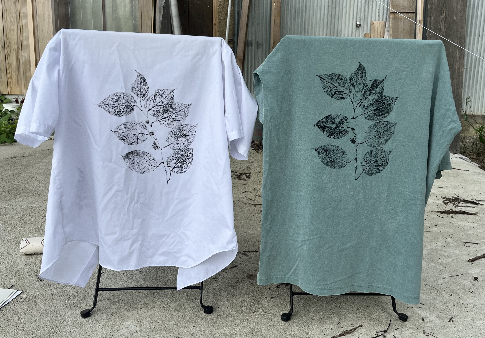
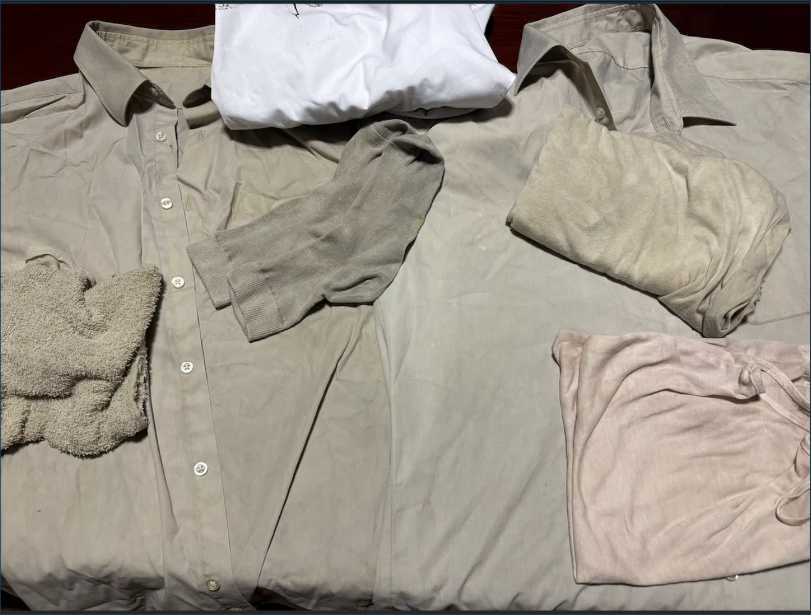
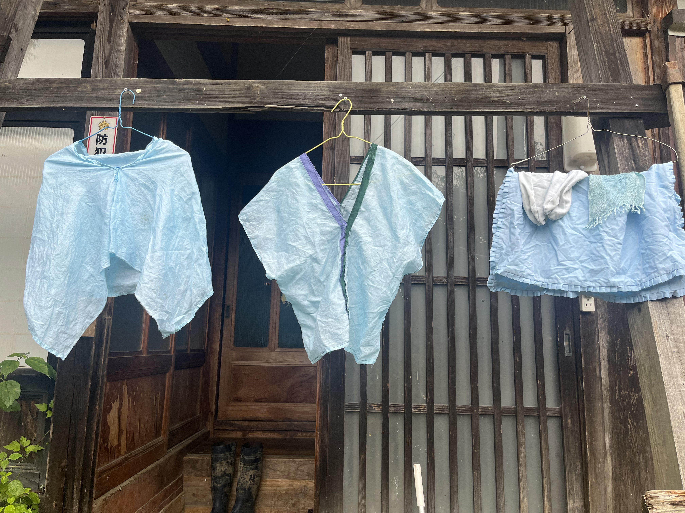
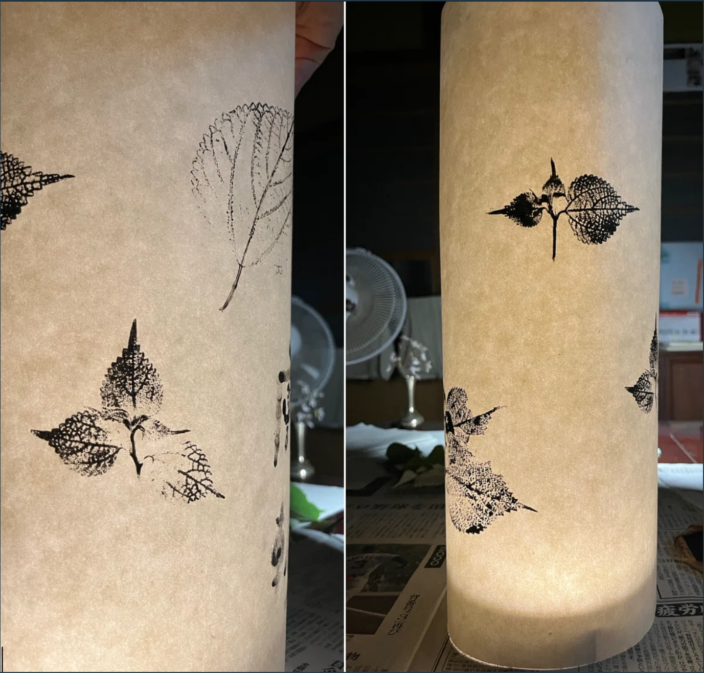

Studies
土地で採った植物、身につけるもの、小さな造形、手仕事の実験。完成度を競う一覧ではなく、判断と技術が育っていく過程です。

草花拓
2025 · 植物 / 布 / 転写

制服シャツ — 藍染＋草花拓
2025 · Wear / Textile

制服シャツ — カラムシ染＋草花拓
2025 · Wear / Textile

おは奈座布団 釧路
2025 · Textile / Object

カラムシ染
2025 · Dye / Plant

クサギ染
2025 · Dye / Plant

アケビ天狗
2024 · Object / Nature

カタメニョウ
2024 · Object

五箇山和紙の灯り
2025 · Washi / Light

貫頭衣／クロップドマント
2025 · Wear

茶碗蒸しパンツ
2025 · Wear

真菰の草履
2025 · Makomo / Wear